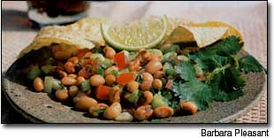
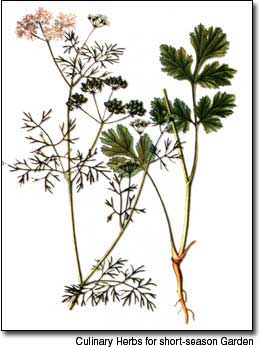

Cilantro (Coriandrum sativum) is really two herbs in one. The leaves, called cilantro or Chinese parsley, impart a musky, citrus-like (some even say "soapy") flavor to Mexican, Chinese and Thai cooking. The tiny, round seeds, called coriander, taste of sage and lemon or orange peel, and season many traditional Indian dishes, especially curries.
Coriander roots also have culinary use. In Southeast Asia, they are dug, chopped and added to salty pickled condiments by many kitchen gardeners.
This easy-to-grow herb is rich in vitamins A and C, and also contains iron and calcium. In the garden, coriander flowers attract beneficial insects. At the flowering and fruit-set stage, the plants give off a slightly acrid smell, which is probably why this herb's botanical name is derived from the Greek word for bedbug, which emits a similar color. In mature seeds, this odor vanishes.
Some people find the unique smell and taste of fresh cilantro unpleasant, but those of this opinion are definitely in the minority because the herb's popularity has skyrocketed in recent years. Cilantro enthusiasts eagerly eat the leaves raw, chopped into salsas or salads, and layered onto sandwiches.
Cilantro is essential in Pad Thai - Thailand's best-known noodle dish - a delicious, spicy-sweet mix of rice noodles, tofu, shrimp or chicken, and eggs, flavored with fish sauce, garlic, chilies and ginger (in addition to cilantro), and topped with peanuts. When used as a topping for rice noodles or in Oriental clipping sauces, cilantro and roasted peanuts often are chopped together.
Down Mexico way, cilantro always brings salsa to life, whether it's tomato haled, with avocados and beans, or fruit-based, using peaches, mangoes or even apples. For tamer palates, a bit of minced cilantro mixed into equal parts of butter and cream cheese makes a wonderful herb spread. Minced leaves stirred into sour cream make a refreshing accent for chili or other spicy soups. Add cilantro to cooked dishes, such as rice pilafs Or beans, at the last minute, to preserve its color and flavor.
Coriander seeds, on the ocher hand, respond well to heat. When cooking with them, roast the seeds first in a warm, dry pan until you can smell their nutty aroma; the roasting only takes a few minutes but it produces an absolutely divine scent. Then, coarsely grind or chop the roasted seeds with a heavy knife, or mortar and pestle. A few crushed coriander seeds make a welcome addition to any curry dish, and provide an ideal accompaniment to lentils, rice, mushrooms, tomatoes and many ether vegetables. Left whole and coated with sugar rather than roasted, the seeds make a dessert-type treat called coriander comfit.
Cilantro grows easily from seeds, or you can buy bunches of fresh cilantro and jars of dried coriander seeds in the produce and spice sections of most supermarkets. Cut stems of cilantro will keep in the refrigerator for several days in a plastic bag (clip the stem ends off and set the sprigs in a glass of water before you slip on the plastic bag). You also can freeze leaves that have been rinsed and patted dry. When frozen, cilantro leaves retain much of their flavor; when dried, leaves lose flavor. Store dry coriander seeds whole, in an airtight container, in a cool, dark place; they will keep for more than a year.
A fast-growing annual, cilantro thrives in cool weather. You will find seeds widely available on retail seed racks and in mail-order catalogs. Among named varieties, `Santo' is a little slower to bolt than the species (wild) cilantro, and `Festival' and Janta' have large leaves that help them grow quickly to a mature size. When sown in the fall, established plants of any variety often survive winter in U.S. Department of Agriculture Zones 7 and 8. Where hard freezes are frequent, the plants need the protection of a plastic tunnel. In all climates, sow seeds at least twice a year where you want the plants to grow - first thing in spring and again in late summer, for a fall crop. Choose a sunny spot, and use only a little fertilizer-too much can make the leaves taste bland.
For quick germination, soak seeds in water overnight before planting out; bury the seeds about an inch deep. If too many seedlings appear, thin the plants to about 5 inches apart. Cilantro can be transplanted if the operation is conducted with minimal disturbance to the roots, but this plant grows so well when sown directly into the garden that starting seeds indoors is hardly worth the trouble. Begin picking leaves as needed when the plants are about 6 weeks old. Soon afterward (especially in spring, when days quickly become longer and warmer), the shape of the leaves becomes very thin and feathery, and the plants suddenly grow taller and prepare to flower (the process known as bolting). If you like edible flowers, try some of the tiny white blossoms sprinkled onto salads.
To harvest coriander seeds, cut the stems when about half of the seeds have changed from green to grayish-tan. Gather the stems together with a rubber band, and hang the bunch upside-down in a warm, dry place for about two weeks. To glean (harvest) the seeds, place a paper bag beneath the bunch and gently tickle the seeds from the stems. Dump the seeds into a dry pan, sort by hand and store in airtight glass jars until you're ready to plant or eat them.
Sources of coriander seeds include: Johnny's Selected Seeds (2 varieties), (207) 861-3901, www.johnnyseeds.com; Park's Seed Company (2 varieties), (800) 213-0076, www.parkseed.com; Richters Herbs (3 varieties), (905) 640-6677, www.richters.com.
Adapted from Barbara Pleasant's forthcoming book, The Whole Herb, to be published by Square One Publishers.
In addition to black-eyed peas, any kind of fresh or canned beans can be used for this recipe, which is sometimes called garden caviar. (Chop the vegetables into small pieces no larger than the peas.) This salsa will keep in the refrigerator for several days.
1 14-ounce can black-eyed peas or small beans, rinsed and drained
1 hot pepper, finely minced
1 small cucumber, peeled and chopped
1 tomato, chopped
1/2 cup cilantro leaves, finely chopped
Juice of 1 lime
1 tablespoon vinegar
1 teaspoon sugar teaspoon cumin teaspoon salt
1 tablespoon olive oil
Combine all ingredients in a bowl. Serve with tortilla chips or use as a filling for soft tacos or pitas. Serves 4.
Mother Earth News
|
 |
 |
|